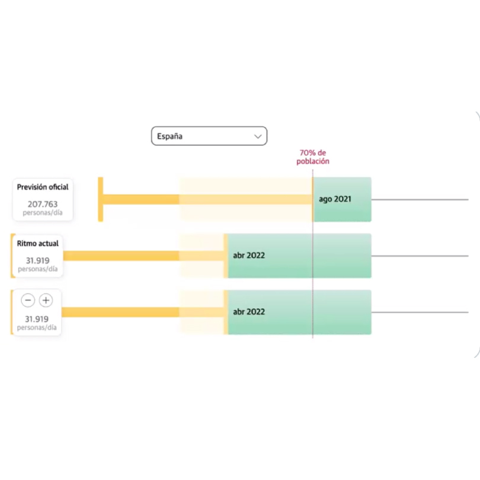

Sara I Belled
Periodista visual Porfolio
¡Hola! Soy Sara y soy periodista visual. Me gusta contar historias y estoy convencida de que en muy pocas ocasiones existe una única manera de hacerlo.
Trabajo en la Agencia Colpisa, la redacción central de los diarios de Vocento, y me especializo en innovación y nuevas narrativas.
En los últimos años he ideado y elaborado piezas visuales como estas, algunas de ellas en equipo:
-
GUERRA UCRANIA

La devastación en Irpin, Gostomel o Bucha: la mitad de los edificios destruidos
09/04/2022
-
ESPECIAL MULTIMEDIA | CIENCIA

Así es y así suena Marte,
el planeta que quiere
conquistar el hombre02/04/2022
-
INFOGRAFÍA | CIENCIA
Dos científicos vascos
a la caza de superplantas
en la Antártida21/03/2022
-
SONIFICACIÓN | COVID
¿Se puede escuchar una pandemia? Así suenan las olas de covid dentro de las UCI
17/02/2022
-
CALCULADORA VACUNACIÓN | COVID
Calcula cuándo llegaremos al 70% de la población vacunada con el ritmo actual
31/08/2021
-
REPORTAJE | COVID

Relato anticipado
de una cena
de Nochebuena18/12/2020
-
REPORTAJE | COVID
Microgotas, el
enemigo invisible24/05/2020
-
ELECCIONES EE UU

El voto por correo rompe las barreras del coronavirus en las elecciones de EE UU
30/10/2020
-
REPORTAJE | DEPORTES
Ballet de esquí, la
bella disciplina perdida
que revive en internet20/02/2022
-
SERIE JUEGOS OLÍMPICOS

Los 2.500 olímpicos de verano, más o menos, que ha tenido España
19/07/2022
-
SERIE JUEGOS OLÍMPICOS

Gimnastas olímpicas
a los 17 años y jinetes
rozando los 4024/07/2022
-
SERIE JUEGOS OLÍMPICOS

Un tirador fantasma
en Tokio07/08/2021
Y, por si te lo preguntabas: sí, también soy una enamorada del papel...


El papel fue, de hecho, mi cuna y el periodismo de provincias, el mejor escenario para sentar la bases de la profesional que soy ahora.
Si quieres, puedes ver aquí más de esta historia.